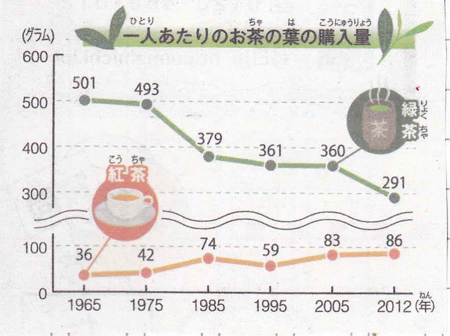
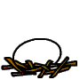
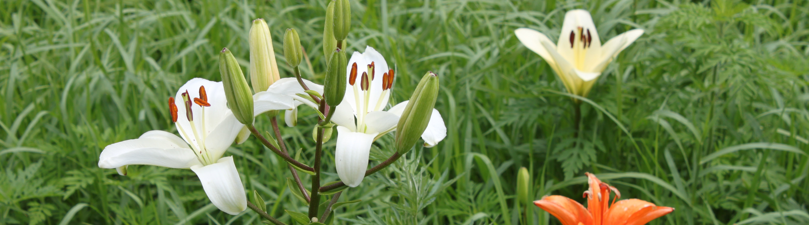

Ⅴ「スポーツ作文」 Ⅵ「七五の四行詩」 Ⅶ「図工作文」 Ⅷ「エトセトラ」
Ⅸ「家庭科作文」 Ⅹ「作文のこころ」
「東日本大震災」の作文・第１部 第２部・第３部
作文打出の小づち
総もくじ
作文編 国語編 小論文編 閑 話
トップページ
作文ワールドⅡ ６. 笑ちゃんはじめに |
① 「いちご狩り」 ② 「結婚式」 ③ 「竹の子ほり」 ④ 「お父さんのダイエット」 ⑤ 「玉むすび・玉どめ」 ⑥ 「石油」 ⑦ 「いのち」 ⑧ 「八十八夜」 ⑨ 「マグロ」 ⑩ 「命のバトン」 ⑪ |
作文ワールド（原点） Ⅱの表紙へ 作文ワールドⅢ「社会科作文」 Ⅳ「理科作文」
Ⅴ「スポーツ作文」 Ⅵ「七五の四行詩」 Ⅶ「図工作文」 Ⅷ「エトセトラ」
Ⅸ「家庭科作文」 Ⅹ「作文のこころ」
「東日本大震災」の作文・第１部 第２部・第３部
作文打出の小づち
総もくじ
作文編 国語編 小論文編 閑 話
トップページ  小学生の国語と作文
小学生の国語と作文
はじめに
笑（えみ）ちゃんは小学６年生。
このホームページには既に『３人半周リレー』（Ⅷ「エトセトラ」）や
「東日本大震災」の作文「３月１１日のこと」で登場している。
ものごとを見る目にユニークな視点があり、
作文にはどことなくユーモアが漂う。
その模様を紹介しよう。
なお、上記目次の①、②は４年生の時のもの、
③～⑦は５年生の時のものである。
| はじめの作文 | 添削例 |
| ３月２６日、日曜日、家族４人で近くの農園へいちご狩りに行きました。 車から出ると、とっても寒かったので、いそいで農園の中に入りました。中はとてもあたたかくて、まるで春のようでした。 おじさんの説明を聞いて、はさみとかごをかりて、あきひめ、べにほっぺ、アイベリーをつみに行きました。真っ赤ないちごをさがしていると、後ろで、 「ブーン、ブーン」 という音がするので、ふり向いてみると、ミツバチが何びきもいるので、びっくりしました。お父さんに 「ミツバチはささないから、だいじょうぶだよ。おびえることないよ」 と言われたので、 「知ってるけど、後ろでブーン、ブーンって音がするから、びっくりしただけだよ。後ろで音がしなかったら、ぜんぜんこわくないよ、ミツバチなんて」 と言い返しました。お母さんと妹といっしょに私は赤くて大きいいちごをさがして、ちょきんちょきんと切ってかごに入れていきました。２つのかごがいっぱいになりました。私たちがいちごをとっているのに、お父さんはいちごをとらないで、ずっと写真をとっていました。私は 「ずっと写真をとっている人は、ほかにだれもいないよ」と心の中でお父さんに言いました。口で言うと、 「いいじゃん」 と言うにきまっているからです。 いちご狩りは楽しいです。今度いちご狩りをするときは、お父さんにも楽しんでもらおうと思います。今日はお父さんにとって、写真狩りの日でした。 |
← いそいでハウスの中に ※ 「お母さんと……」で改行する。 |
いちご摘みの楽しい様子に加え、ユーモアもある。
段落（改行）に注意すれば書き直すまでもない。
もどる
| はじめの作文 | 添削例 |
| ３月１９日、月曜日、明日銀座で、お父さんの妹の結婚式があるため、「西洋銀座」というホテルにとまりました。 ３月２０日、火曜日、朝起きて、あわぶろに入りました。朝ご飯は部屋で食べました。 今日は、おじいちゃんがいないので、お父さんがおじいちゃんの代わりをして、花よめを花むこにわたします。 結婚式はホテルの中の教会でありました。プログラムは次の順番でした。 １．婚約者入場 ２．祝福の確認 ３．讃美歌 ４．聖書朗読 ５．式辞 ６．誓約 ７．指輪の交換 ８．祈祷 ９．結婚宣言 10．キャンドルセレモニー 11．祝祷 12．新郎新婦退場 その後、べつの部屋に移って、親族紹介をしました。お父さんは、自分のおばさんを兄弟だと紹介したり、名前をまちがえたりしていました。 その次に、食事をしながらパーティーがありました。テーブルが１２くらいあって、天じょうにはシャンデリアがかがやいていました。私は妹と小さなカメラで、花よめ花むこをとったり、親類の人をとったりしていましたが、とちゅうでお父さんをとることにしました。お父さんは大きなカメラで花よめ花むこを夢中でとっていて、そのかっこうがおもしろかったからです。 結婚式とパーティーはあっという間に終わってしまいました。お父さんたちの結婚式もこんな感じで、すぐ終わってしまったのかなあと思いました。 今日の2人も、私のお父さんお母さんみたいに、幸せになってほしいと思います。 |
← ……とまりました。結婚式はこのホテルであります。 |
はじめに、路線の説明をしておこう。
笑ちゃんは中央線沿線に住んでいる。
中央線は東京・新宿から立川・八王子を通って、山梨・長野方面に延びている。
笑ちゃんの家や作文道場は、立川に近い国立・国分寺にある。
立川からは西北の奥多摩方面に青梅線が出ていて、途中で五日市線が西方に分かれる。
| はじめの作文 | 添削例 |
| ５月３日に五日市へ竹の子ほりに行きました。この日はお母さんと妹のひかりと電車で行きました。お父さんは仕事だったので、後から車で来ます。どうやって行くのか書いたものを、お父さんがメールでお母さんに送ってありました。 「次は八王子、終点八王子です。JR東日本をご利用いただきまして、ありがとうございました」 と聞くと、お母さんは 「えっ」 と言って、運転手に 「ここに行くんですけど、なんで終点なんですか」 と聞きました。 「ああ、これは立川で乗りかえるんですよ。メールにも書いてあるでしょ」 （私は、立川で「降りないの？」と言ったのに、と思いました）。 「どうすればいいのですか」 「いちばん早く着くのには、立川にもどるのがいいですよ」 と言われて、もどる電車に乗ると、妹が 「まだ竹の子ほっていないのに、帰るのいやだ。家に帰りたくない」 と言いました。お母さんは 「いいの。ほりに行くから」 と言いました。 立川で乗りかえて、やっとの思いで竹の子ほりの山に着きました。お父さんはまだ着いていなかったので、先に３人でほりに行きました。 お母さんが言うように、土からあまり出ていない竹の子を選びました。ほり方は、 ・竹の子の先っぽが向いているほうからあなをほっていく。 ・白いぶつぶつしたものが見えたら、その下にくわを入れて切り取る。 私たちは３つほりました。 山を下りるとき、お母さんが 「すべるから気をつけなさい。すべったら、どろまみれよ」 と言いました。 ドドドドドー 「きゃあ」 と聞こえたので、振り向くと、お母さんがすべっていました。 山から下りてお金をはらっていると、お父さんが迎えにきました。スーツすがたでした。 夜は竹の子ごはんとワカメのスープでした。とってもおいしかったです。 |
← と言うのを聞くと、お母さんは 「えっ」 と言いました。電車を降りて、お母さんは駅員さんにメールを見せながら、 「ここに行くんですけど、……」 ← 立川で五日市行きに乗って、 ← 竹の子はいくつもにょきにょき生えていましたが、お母さんが言うように、…… ← ……スープでした。竹の子のかおりがぷ～んとして、とっても…… |
これは、2日にわたって書かれている。
| 1日目 | 添削例 |
| わたしの家には、タニタの体重計があります。これは、お母さんが去年のクリスマスにサンタさんにもらったものですが、今は主にお父さんがやせようとして、ダイエットのために使っています。お父さんは体脂肪についての本をもっています。これは、タニタの社員食堂の「500キロカロリーまんぷく定食」について書かれている本です。タニタの社員食堂で、この本に書かれているメニューで食事を出したら、全員がやせたというからびっくりして、ためしてみたくなったのだと思います。 お父さんがお願いしたため、お母さんがとつぜんはりきって、夕食の準備を始めました。 メニューは、 ・根菜とひき肉のしぐれ煮 ・ほうれん草ともやしのあえ物 ・里いもののりまぶし ・かいわれ大根のすまし汁 です。 買い物は1時間以上かかりました。いつもなら、お母さんは小さじなどではからなくても、おいしいごはんを作れるので、買い物は10分ほどで終わってしまうのに、今日は材料を探してお店の中をぐるぐるぐるぐる回って、ついていくのがたいへんでした。 料理の時間はほぼ2時間かかりました。なんだか、おじいちゃんやおばあちゃんが好きそうな料理でした。でも、お父さんはよろこんで食べていました。わたしも食べてみましたが、意外においしかったです。お父さんは「おいしい、おいしい」と言って、残った分と妹の残りまで平らげていました。食べすぎて、もっと太るのではないかと心配です。 |
← ……全員がやせたという話を読んで、ためして…… ← お店の中をぐるぐる、ぐるぐる回っていました。ついていくのが…… |
笑ちゃんの見る目はユニークだ。
| ２日目 | 添削例 |
| 4月7日、昨日から私と妹、お母さんはお父さんのダイエットにつきあっています。いつもとちがうメニューなので、もうたいへんです。 今日のメニューは、 ・トリのささみのピカタ ・きのこサラダ ・わかめのみそ汁 ・みかん（1個） です。 買い物は昨日いっしょにすませておきました。ささみのころもは意外にチーズでした。昨日のしぐれ煮よりはおいしかったです。でも、お肉はこれだけなので、なんだか、お父さんではなくて、私たちがやせてしまうような気がします。 明日は私の誕生日なので、ダイエットの食べものではないものを、お母さんに作ってもらいます。 |
実に、楽しい。
もどる
⑤ 「玉むすび・玉どめ」
こちら、「家庭科作文」のサイトへ。
笑ちゃんは地球温暖化を考えるために、
その大きな原因になっている石油について調べることにした。
| はじめの作文 | 添削例 |
| 石油は、電気をつくるために火力発電で使われたり、車を走らせるために使われたり、化学繊維を作るために使われたりします。 電力は、水力、火力、原子力、風力、太陽光、地熱などによって起こされます。今の日本では、火力が占める割合は約65％です。また、火力発電には石炭、石油、天然ガスが使われます。そのうち、石油が使われる割合は約１６％です。ですから、石油は発電量の約１０％に使われていることになります。 日本国内の自動車の生産台数は約840万台で、そのうち低公害車は約45万台です。ですから、約95％は石油や天然ガスを使っていることになります。 石油は私たちが着ている衣料にも使われています。衣料のうちのナイロンやポリエステルなどの化学繊維は約90％を占めます。 火力発電や自動車に使われる石油は、大量の二酸化炭素を出して、地球温暖化の原因になっているので、火力発電に代わる水力発電や風力発電、太陽光発電などが考えられており、二酸化炭素を出さない電気自動車などの生産台数が増えています。 ところで、石油はあと100年で、また、石炭も150年でなくなると言われています。そうすると、150年後には二酸化炭素を出す物がなくなるので、地球の空気はきれいになります。都会でも夜空にたくさんのきれいな星が見えるようになり、呼吸もしやすくなります。とても健康な世界になるでしょう。でも、電気が３分の１減って、着る物も９割がなくなってしまうので、着る物に困るようになるでしょう。 電力は今、火力発電の代わりに太陽光などの自然エネルギーを利用して発電しようとしています。けれど、全部合わせても１％ぐらいにしかなりません。だから、もっと電気を作る方法を考えなければなりません。日本は山や谷が多い国なので、ダムをもっと作ったほうがいいと思います。ダムは洪水を防いでくれます。それに、必要な時に田んぼや畑に水をやれるので便利です。何より空気を汚さないで電気を作れるので、一番いい方法だと思います。 着る物は、昔のように木綿や麻や絹を多くすればよいと思います。そのためには綿畑や桑畑を広げ、カイコを飼わなければなりません。日本には遊んでいる田や畑がたくさんあるので、それを利用できます。でも、いっぺんに９割を補うのは大変なので、石油を火力発電に使わないで、着る物のほうに回せば、１００年も２００年ももつと思います。 これだけ調べて、石油はとても生活に役立っているんだなあと思いました。 |
○ 原子力は、東日本大震災が起きる前には電力の約３０％をまかっていたんだね。でも、原発事故で、今は絶対安全ということが確かめ４られない限り使えないしね。 ◎ いい考えだねぇ。 話が石油のことにもどってきているのもいい。 |
※ これを書いたのは2012年で、
利用した資料は2010年前後のものである。
読書感想文も一つ紹介しよう。
| はじめの作文 | 添削例 |
| 私は小林千登勢という女優さんが少女時代のことを書いた『お星さまのレール』という本を読みました。このお話にはいのちの大切さのことが２つ書かれています。1つは、妹が死んでしまったこと、もう１つは、戦争で負けて北朝鮮から日本に帰ってくる時に聞いた、母と子がいのちを落としたことです。 小林さんは第２次大戦中から戦後にかけて、今の北朝鮮で過ごしました。妹の三千代が死んだのは作者が7歳の時でした。病名は腸チフスです。その時のことはあまり詳しく書かれていませんが、小林家にはいのちの入れかわりがありました。弟が生まれたのです。三千代が死んだとき、ほんとうは悲しいはずなのに、赤ちゃんができたため、三千代のことは忘れられたようになりました。けれども、日本に帰ろうとしたとき、お母さんは三千代の墓を掘り返して、小さな空き缶に骨をおさめ、自分のおなかに巻きつけました。そのために、三千代のいのちもいっしょに日本へ帰ることになりました。 小林さんたちは他の家族79人といっしょに、ソ連軍に見つからないように、夜に200キロも歩き通しました。とちゅうで歩けなくなって、他の人におんぶしてもらう年寄りや、マラリヤという病気になってしまう少年もいましたが、38度線を越えて何とか日本に帰ることができました。これはいのちがけの行動でしたが、そのとちゅうには、悲しい話もありました。初めに貨物車に乗ったとき、100人近い引上げグループの中に、赤ん坊が泣いて周りの人にうるさがられたため、その子を貨物車から投げ捨てた母親がいました。その母親はやがて気が狂ったように貨車から飛び降りて死んでしまいました。 このような話から、私はいのちの大切さを学びました。 （以上、約７５０字） |
◎ 全体の案内（鳥観図）のあるのがいいね。 ← 三千代もいっしょに日本へ帰ることができました。 |
本の内容も、その時どきに何を感じたかもよく分かる。
戦争の悲惨さも伝わってくる。
もどる
笑ちゃんはニュースに興味をもっている。
小学生新聞などで、ニュースになっていることを調べているが、
５月のはじめには、こんなことに目が留まったようだ。
| はじめの作文 | 添削例 |
| ゴールデンウィークのある日、４年生の音楽の時間に習った歌を思い出しました。「♪夏も近づく八十八夜、……」と歌われる『茶つみ』の歌です。題名から考えると、日本茶（緑茶）に関係しているようなので、調べてみました。 八十八夜は、立春（２月４日ごろ）から数えて８８日目のことで、５月２日ごろになります。八十八夜は、春から夏に移る節目の日、夏への準備をする決まりの日、縁起のいい日とされています。「八十八夜の別れ」という言葉があって、このころから霜もなく、安定した気候となるため、農家では茶つみや田植えなどの農作業をする目安となっています。 「八十八夜の忘れ霜」、「さつき寒」とも言い、急に気温が下がって農作物に思いがけない被害を与えるのを警戒する言葉もあります。 八十八夜につみ取られるお茶は、冬の間に蓄えられたうまみのもとであるテアニンなどの成分が含まれています。香りがよく、栄養価の高い上質なお茶であるため、一番茶と言われています。八十八夜は縁起がいいという意味合いと気候条件を含めて、この時期のお茶は古来より不老長寿の縁起物のお茶として大切にされてきました。  （朝日小学生新聞より） 日本の緑茶事情を調べてみました。日本茶の日本一の産地は静岡県で、二番目が鹿児島県、三番目は三重県です。 一人当たりの購入量をみると、日本茶は年々少なくなっています。最近は、ペットボトル入りのお茶を飲んでいる人が増え、お茶の葉を買って自分でわかして飲んでいる人が少なくなっています。これは、食生活や生活のスタイルが変わり、家庭で団らんをしながらお茶を飲む習慣がなくなりつつあることだと思います。 私は日本の伝統文化が失われてしまわないように、お茶の種類や入れ方を学びながら、日々暮らそうと思います。 |
← ……ので、八十八夜と日本茶について調べて…… ← 一方で、「八十八夜の忘れ霜」…… ← 冬の間に蓄えられた、うまみのもとであるテアニンなどの…… ← この時期のお茶は古来、不老長寿の…… |
笑ちゃんの興味は、お茶からマグロへと移る。
| はじめの作文 | 添削例 |
| １９７０年から近畿大学が始めたマグロの完全養殖は、失敗を繰り返しましたが、２００２年に世界で初めて成功しました。完全養殖とは、マグロの稚魚をもってきて養殖場で育てる一般的な養殖とは違って、卵を人工ふ化させて親になるまで育て、また卵を産ませて、それを育てるという方法です。近畿大学が養殖するのは、太平洋や大西洋の広い地域に住む「クロマグロ」です。 ２０１１年、国内では約４万トンのクロマグロが出回りました。これは、世界の消費量の約８割を占めます。近大マグロは世界からも注目を浴びていて、日本はスペイン、イタリア、オーストラリアに完全養殖の技術を教え、アメリカに完全養殖で育てた近大マグロの出荷もしています。 １９７０年代半ばからクロマグロの生息数が減ってきています。そのせいで、近年はマグロ漁に関するルールが厳しくなり、マグロを管理する国際組織で、取る量を決めています。その結果、昨年の調査では、マグロの数が増え、２０１３年は東大西洋で漁獲できる量は５００トン（全体の１％）になりました。日本の分はそのうちの４２．５トンです。その一方で、取りすぎが警戒されていることに変わりはありません。養殖のための稚魚の取りすぎも心配されるため、農林水産省が昨年１０月、養殖場を新たに造らないように指示しました。ただし、」これは完全養殖とは関係ありません。 完全養殖がもっと広まって、クロマグロの絶滅を心配せずに食べられるようになるといいなと思います。 |
← 広い海域 ※ 「昨年」→「２０１２年」 |
ちょっと変わった読書感想文を紹介しよう。
| はじめの作文 | 添削例 |
| 私は『命のバトン』という本を読みました。2011年3月11日の津波を生き抜いた、奇跡の牛の物語です。 宮城県農業高等学校、通称「みやのう」では、生徒たちが34頭の牛を大切に育てながら、牛のコンテスト「共進会」を目指してがんばっていました。ところが、2011年3月11日、大地震が起こり、大津波が「みやのう」にもおそいかかりました。先生たちは、生徒たちだけでなく、牛の命も守ろうと奮闘しました。そのため、34頭のうち14頭が助かりました。その牛たちは、やがて被災した人たちの励みになったという話です。 先生たちは、牛の胃袋はガスでふくらんでいるので、浮き袋をもっているようなものだと考え、ここまで津波が押し寄せても、体が浮いて泳ぐことができるかもしれないと考えました。そこで、スタンチョンのロックをはずし、牛を自由にしました。おかげで、乳牛13頭、和牛１頭が助かりました。中には、「みやのう」から２キロも離れた所で見つかった牛もいました。また、妊娠していた牛が２頭いましたが、お腹の赤ちゃんもいっしょに助かりました。 ５月になって「みやのう」の授業が再開され、先生たちは、生き残った牛で６月の「共進会」に出ることを決意します。共進会には酪農家や農業高校の生徒が自慢の牛とともに出場して、牛のスタイルの美しさや能力の高さを競います。共進会まであと１か月半しかないので、土日も使って共進会に出るための練習をしました。そして、３頭が出場し、３頭とも上位入賞しました。 「みやのう」には、「命名権」というものがあります。子牛が産まれると、その年に一番活躍した生徒が名前を付けることができるのです。牛のコンテストに出場した３人の生徒の中で２人が命名権を獲得しました。津波の時にお腹にいた２頭の名前は、２人によって「マオ」と「サニー」と付けられました。 ２０１２年３月の卒業式では、「マオ」と「サニー」の頭絡（とうらく）という綱がバトンとして２年生の手に渡りました。 そして、「サニー」は２００１２年の共進会で見事にグランドチャンピオンになりました。 |
← 東日本大震災の時の津波を…… ※ スタンチョンは stanchion で、牛舎の仕切り棒。 ← ……ないので、先生と生徒たちは土日も使って、いっしょに…… |
この感想文の、変わったところはどこだろうか。
それは、感想らしきものがが書かれていないことだ。
「感想のない読書感想文」というところだろうか。
筋を紹介しているだけだが、感動が伝わってくる。
そうであれば、そこまで書いてきたことが感想代わりなのだ。
なまじ「感想」など付け加えないほうがよいと言える。
⑪ 未定
準備中

しばらくお待ちください。
ご意見・ご希望・ご質問はこちらへ
| はじめの作文 | 添削例 |
